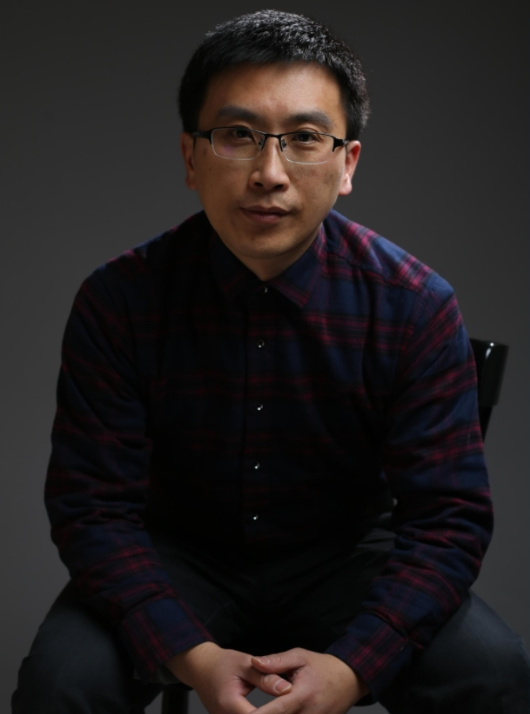

Jiangping Hu(胡江平)
- 职称: 教授
- 最高学位: 博士学位
- 电子科技大学自动化工程学院
- 团队：生物智能与控制研究中心
- 地址：成电国际创新中心D603、D604
- 邮箱：hjp_lzu@163.com
研究方向:
- 多智能系统建模与控制、传感器网络信息融合、智能飞行控制
学术头衔及兼职:
- IEEE高级会员、《Kybernetika》编委、《Journal of Systems Science and Complexity》编委、中国自动化学会控制理论专业委员会委员、中国自动化学会分数阶系统与控制专业委员会委员、中国自动化学会认知计算与系统专业委员会委员。
学习工作经历:
- 2000.08-2001.08： 中国电子科技集团公司第五十一研究所 工程师
- 2007.09-2008.08： 瑞典皇家工学院 博士后
- 2008.09-2014.07： 电子科技大学自动化工程学院 副教授
- 2014.08-至今： 电子科技大学自动化工程学院 教授
科学研究:
- 长期从事多智能系统建模与控制、传感器网络信息融合、智能飞行控制等方面的研究。发表SCI/EI收录学术论文50余篇。先后主持或参与了国家自然科学基金、教育部“新世纪优秀人才支持计划”、教育部留学回国人员科研启动基金、四川省青年科技创新研究团队等多个国家和部委科研项目。入选教育部“新世纪优秀人才支持计划”、四川省学术和技术带头人后备人选，获2011年电子科技大学“学术新人奖”、2015年电子科技大学“先进工作者”。
主讲课程与教学研究:
- 本科生课程：信号与系统
- 研究生课程：学科前沿知识专题讲座
- 教学研究：
1.参与挑战性课程“电子系统设计与工程应用实践”建设
2.参与《智能科学与技术》学科前沿课